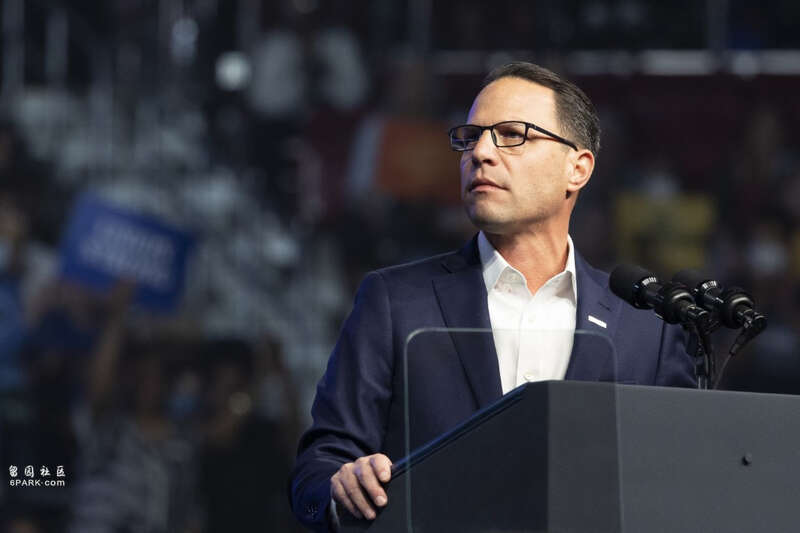
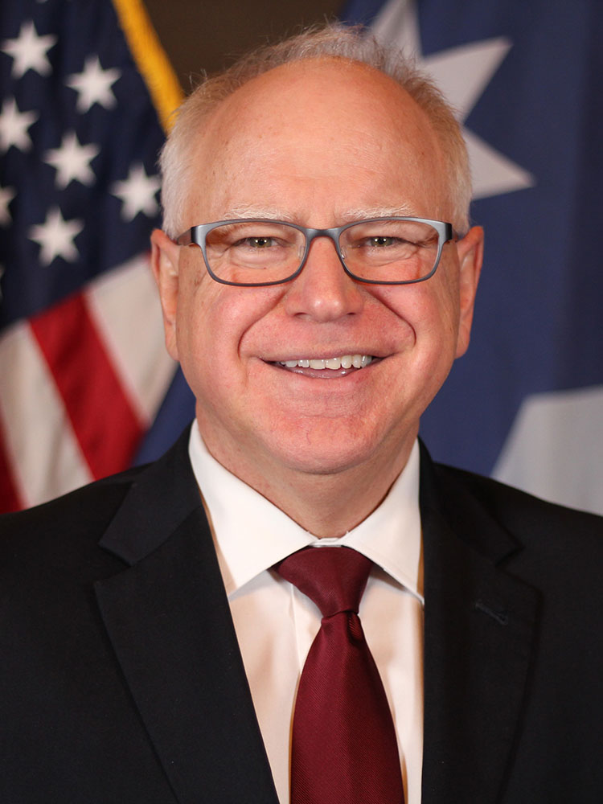

据路透社8月6日报道，哈里斯正式获得美国民主党总统候选人提名，其副手人选范围已缩小至宾夕法尼亚州州长夏皮罗和明尼苏达州州长沃尔兹两人。
哈里斯副手将于6日费城的竞选活动上正式公开亮相，两人接下来将在五天内前往六个关键州的城市举行竞选集会。
当地时间8月5日，美国副总统哈里斯正式获得2024年美国总统选举民主党总统候选人提名。至于副手人选，路透社援引三名知情人士消息报道称，哈里斯已经将范围缩小至两位，即宾夕法尼亚州州长乔什·夏皮罗和明尼苏达州州长蒂姆·沃尔兹。5日，哈里斯发布的一则声明仍称，其副手人选尚未决定。
路透社称，哈里斯预计将于6日宣布她的选择。当晚，她将与她的竞选搭档一起在费城天普大学首次公开露面。
6日，美国大选共和党总统候选人特朗普的副手万斯也将前往南费城进行竞选活动。
作为哈里斯副手人选之一，51岁的宾夕法尼亚州州长乔什·夏皮罗是最受欢迎的美国州长之一，他所在的宾夕法尼亚州是著名的“摇摆州”，竞选策略师向CNN承认，该州的19张选举人票可能决定大选结果。

现宾夕法尼亚州州长乔什·夏皮罗 IC Photo
哈里斯如果当选，可能降低对于以色列的支持力度，夏皮罗的犹太人身份将有利于“中和”这一点。
路透社报道称，如果夏皮罗成为哈里斯的搭档，将赋予此次选举以“历史意义”，他将可能成为美国第一位犹太裔副总统，而哈里斯则有望成为第一位当选美国总统的黑人和南亚裔美国女性。
另一名副手人选明尼苏达州州长蒂姆·沃尔兹现年60岁，曾是美国国民警卫队成员和教师。近几周，他作为哈里斯的支持者提高了自己的知名度。
沃尔兹曾担任亲共和党选区的国会议员，他已证明自己对农村的白人选民很有吸引力。他在担任州长期间也支持进步政策，例如支持提供免费的学校餐食和延长工人的带薪休假。
明尼苏达州虽然是民主党州，但该州靠近威斯康星州和密歇根州这两个关键战场。

明尼苏达州州长蒂姆·沃尔兹明尼苏达州政府网站
除了夏皮罗和沃尔兹之外，获外界关注的哈里斯副手人选还包括亚利桑那州参议员马克·凯利、美交通部长皮特·布蒂吉格、肯塔基州州长安迪·贝希尔和伊利诺伊州州长 J·B·普利兹克。
消息人士告诉路透社，候选人将于当地时间5日晚或6日早上收到是否被选中的通知。哈里斯竞选团队也计划在社交媒体上发布相关公告。
6日下午的集会将拉开哈里斯及其副手为期五天的关键州竞选之旅的序幕。两人将访问宾夕法尼亚州费城、威斯康星州欧克莱尔、密歇根州底特律、北卡罗来纳州达勒姆、亚利桑那州菲尼克斯和内华达州拉斯维加斯等六个城市。
竞选官员表示，两人将此行将在这些城市的传统黑人大学、工会会馆和餐馆等地举行集会。